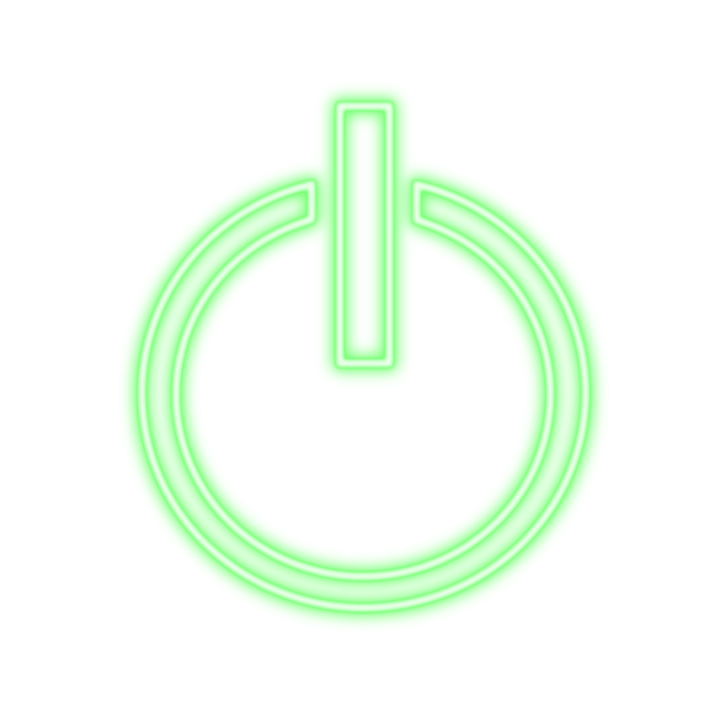

¡Comienzas el reto de crear tu casa inteligente! Vamos a comenzar realizando una pequeña simulación con Scratch, el que seguro conoces y has usado para crear otras programaciones para tarjetas y juegos. Así, practicarás lo que después realizarás con la tarjeta física Micro:bit.
Es importante que tengas presente este mapa mental con el orden cronológico de las tareas que vas a realizar. ¡Adelante!
